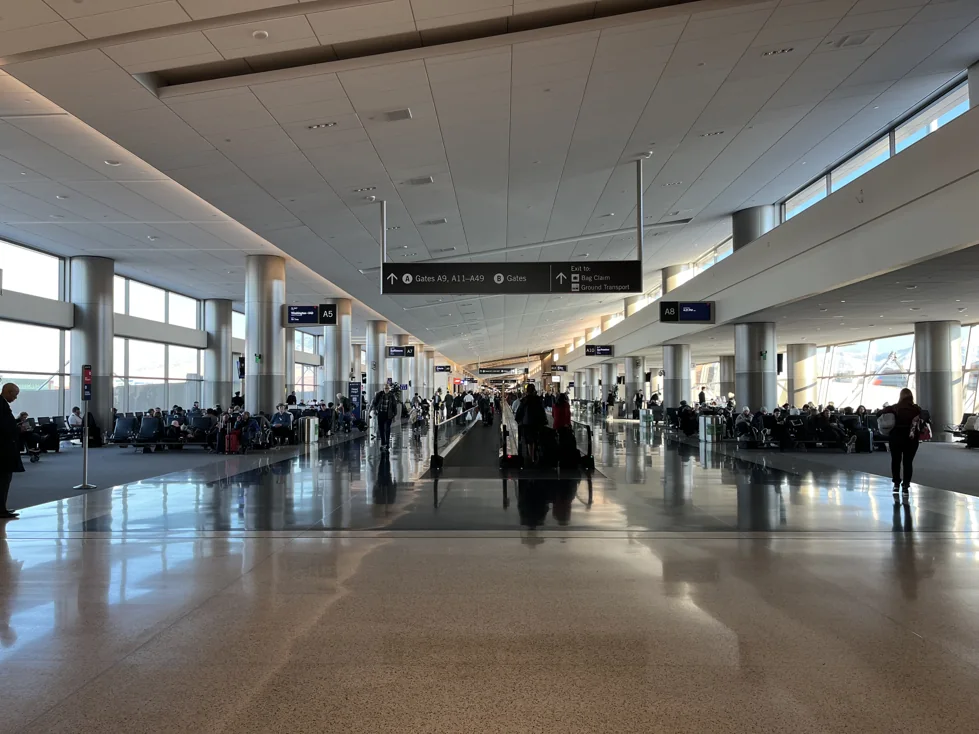
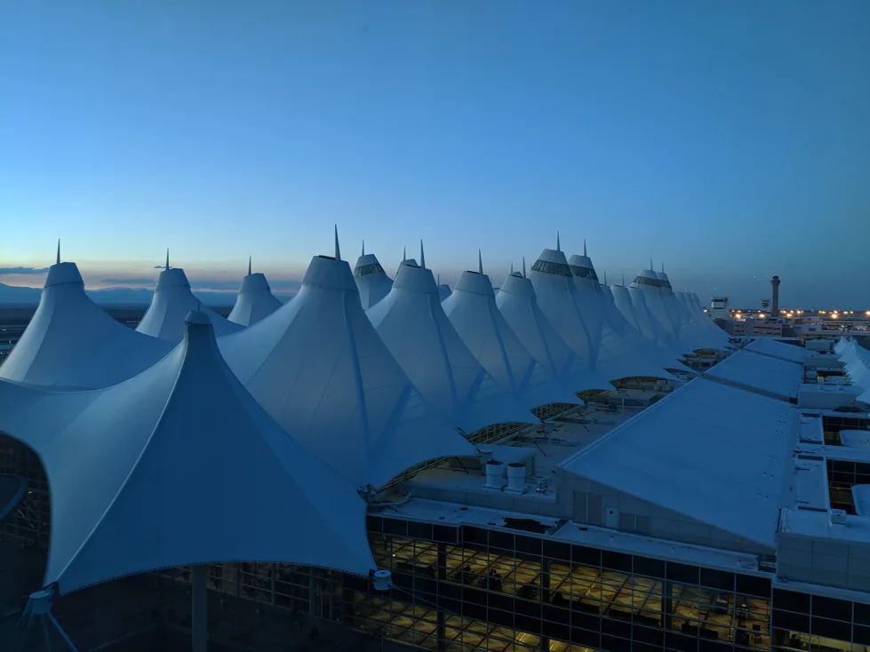
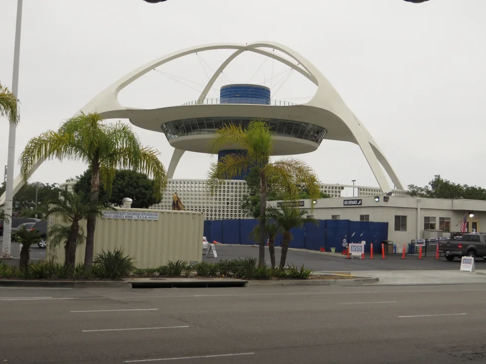
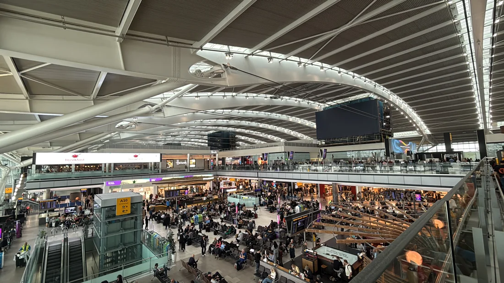
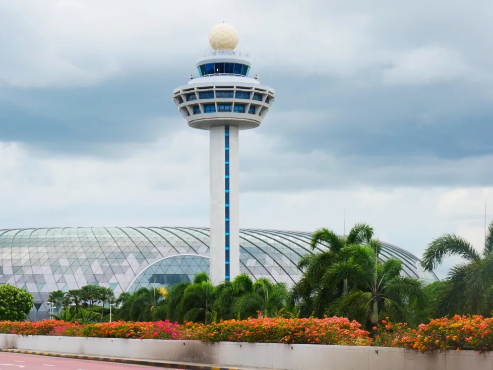
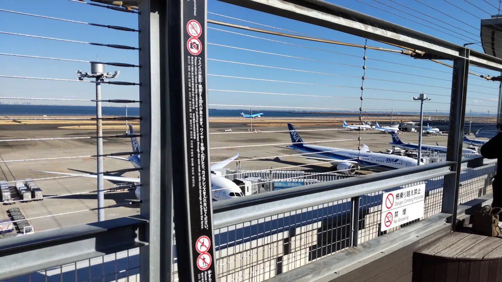
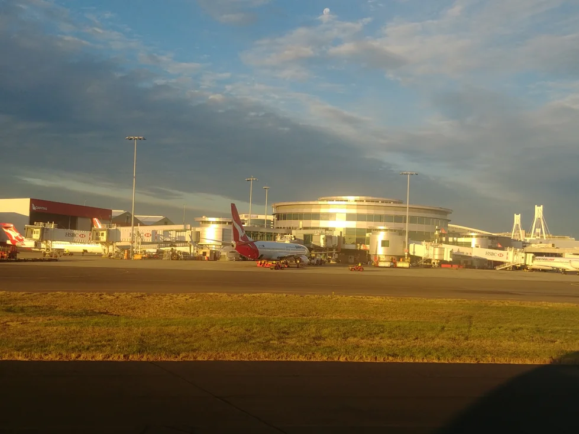
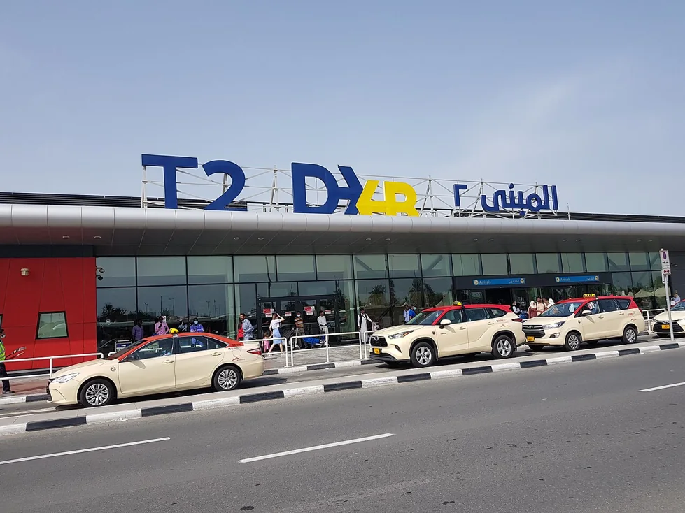

← Back to AerovaleArtwork & sources
100 original, AI-generated aircraft illustrations depict the base airframes. All 400 catalog models and variants have imagery: fictional Eco, Express and Stretch upgrades reuse their base airframe artwork with distinct generation badges. Artwork is illustrative, not an engineering reference.
Six original regional airport environments appear throughout the world. These are labeled “Airport concept art”; the eight photographs below depict the exact named airports. All generated art used the built-in image generation tool. Exact original prompt set.
Airport photography

SLC · Concourse of Salt Lake City International Airport in Utah in 2025
Photo by Antony-22. CC BY-SA 4.0 · Original source
Resized and compressed to WebP; displayed with a card crop and overlay. The adapted image retains its source license.

DEN · Denver International Airport Main Terminal at dusk from the Westin Hotel (13th floor)
Photo by Peterquinn925. CC BY-SA 4.0 · Original source
Resized and compressed to WebP; displayed with a card crop and overlay. The adapted image retains its source license.

LAX · The Theme Building at Los Angeles International Airport.
Photo by Ken Lund. CC BY-SA 2.0 · Original source
Resized and compressed to WebP; displayed with a card crop and overlay. The adapted image retains its source license.

LHR · Interior of Heathrow Airport Terminal 5.
Photo by CedarGlen86. CC0 1.0 · Original source
Resized and compressed to WebP; displayed with a card crop and overlay. The adapted image retains its source license.

SIN · Changi Airport control tower and Jewel in Singapore.
Photo by George Tan. CC BY 2.0 · Original source
Resized and compressed to WebP; displayed with a card crop and overlay. The adapted image retains its source license.

HND · Aircraft on the apron viewed from Haneda Airport Terminal 1 observation deck.
Photo by Dataer. CC0 1.0 · Original source
Resized and compressed to WebP; displayed with a card crop and overlay. The adapted image retains its source license.

SYD · Sydney Airport Terminal 3 exterior with sunset reflecting on the round terminal end.
Photo by Sam Wilson. CC BY-SA 2.0 · Original source
Resized and compressed to WebP; displayed with a card crop and overlay. The adapted image retains its source license.

DXB · Arrivals exterior at Dubai International Airport Terminal 2.
Photo by Ravi Dwivedi. CC BY-SA 4.0 · Original source
Resized and compressed to WebP; displayed with a card crop and overlay. The adapted image retains its source license.
Interface icons use Lucide, under the ISC license.
Map & airport data
Country polygons: Natural Earth, public domain. Airport coordinates: OurAirports, public domain. Performance and economy values are game-balanced approximations.
Design research
Visual references: Airline Manager Steam screenshots; App Store listing. No screenshots or artwork from Airline Manager are included in this game.
{kind=link}
{kind=link}
.jpg){kind=link}
{kind=link}
{kind=link}
{kind=link}
{kind=link}
{kind=link}